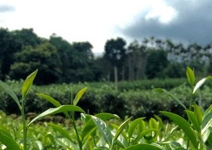
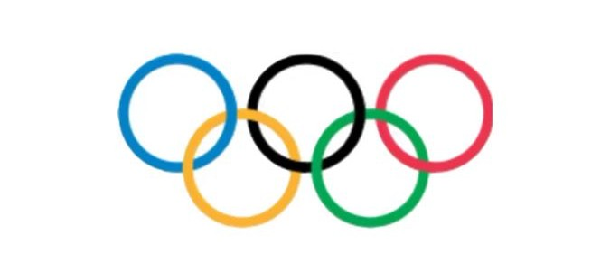
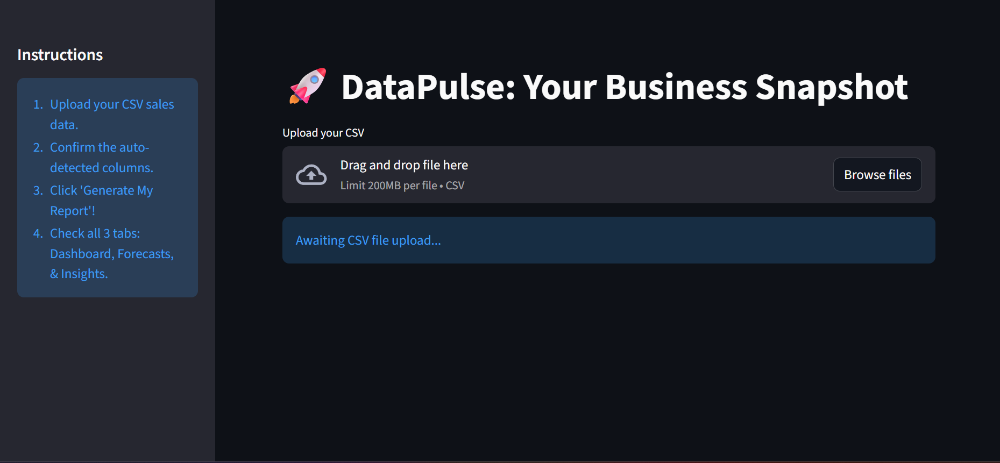
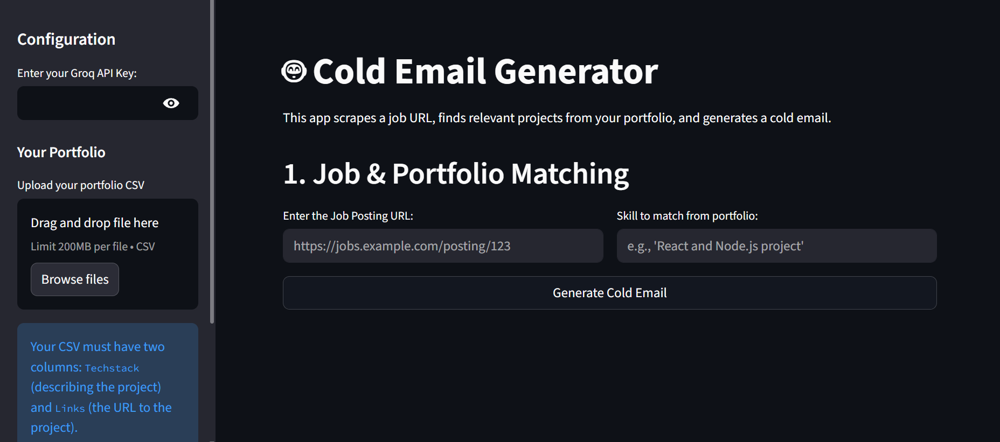
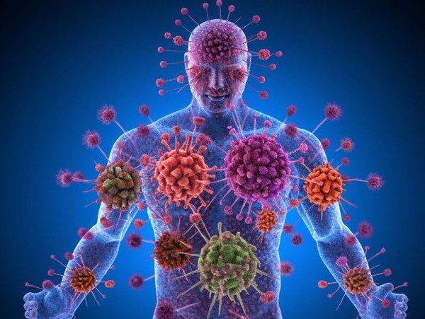
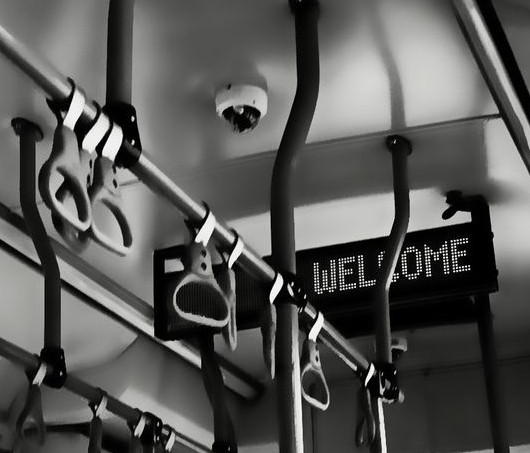
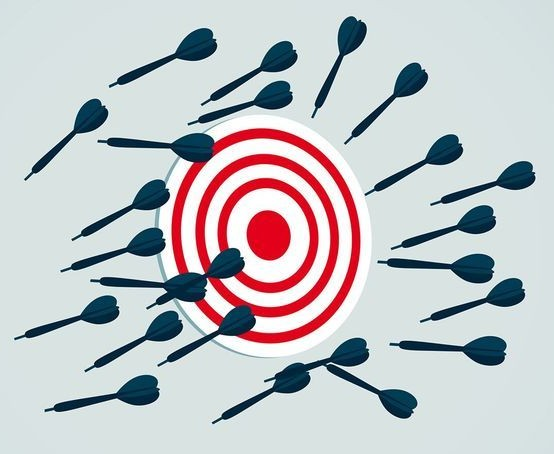
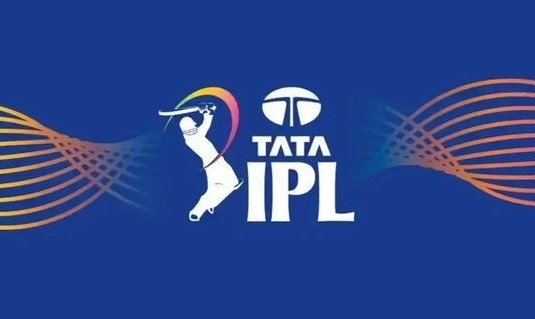

Crop Classification
This project is a web application built with Streamlit that uses a PyTorch deep learning model to classify images of crops.

Data Analyst well versed in SQL , Python , Power BI and Machine Learning Models. @AmaanLinkedIn .
This project is a web application built with Streamlit that uses a PyTorch deep learning model to classify images of crops.

This project tackles the classic Kaggle competition problem: predicting whether a passenger on the Titanic survived or not based on their personal and travel information. It showcases a well-structured approach, moving from data preparation and feature engineering to model training, hyperparameter tuning, and final prediction.
The objective of this project is to predict whether a customer will churn (cancel their service) based on their demographic and account information. It follows a complete machine learning workflow: data cleaning, exploratory analysis, feature engineering, and finally, training and comparing several classification models to find the best performer.
Project Objective: To develop a time-series forecasting model using a Long Short-Term Memory (LSTM) neural network to predict the future closing price of a publicly traded stock (Microsoft - MSFT).
This projects showcases the Power BI dashboard on Delhi Education System.

Applying libraries such as Pandas, NumPy, and others to analyze and manipulate data. Leveraging Python’s strengths for both analysis and visualization.
Did the EDA to find the Website Performance.

A dynamic business intelligence dashboard built with Streamlit that allows users to upload any sales CSV. The app auto-detects data types to generate KPIs, sales forecasts (using Prophet), and "people also bought" insights.

A Python script that scrapes a company's career page for job postings using LangChain and WebBaseLoader. It then uses an LLM (via Groq) and a ChromaDB vector store to find relevant portfolio projects and draft a customized cold email.
A data analysis project using SQL queries to derive key business insights from a relational database of pizza sales. The script calculates KPIs like total revenue and average order value, and identifies the top 5 best- and worst-selling pizzas.

A machine learning project built in Python to predict one of 41 diseases based on a patient's symptoms. Utilizes a Decision Tree Classifier and Scikit-learn to analyze 132 symptom features, achieving 100% accuracy on the test dataset
A machine learning project using Scikit-learn and Pandas to predict house prices based on features like age and location. Employs data cleaning, exploratory analysis, and model evaluation to build a regression model with 87% accuracy. This model employs Linear Regression and is evaluated using R-squared and RMSE to determine its predictive accuracy.

An exploratory data analysis (EDA) of Bangalore's BMTC bus operations using Pandas, Plotly, and Seaborn. Analyzes ridership trends, peak hours, and route performance to provide actionable insights for optimizing public transport services. The project visualizes key metrics such as bus type distribution, top 10 busiest routes, and total kilometers by depot.
An in-depth analysis of an Amazon sales report, involving data cleaning and transformation with Pandas. Generates insights on sales trends, top-selling products, and customer behavior using visualizations created with Matplotlib and Seaborn.

Did exploratory data analysis of 47 failed startups in the "Finance and Insurance" sector to identify key patterns.

A sports analytics project breaking down the IPL 2024 season match data to uncover team performance metrics. Utilizes Pandas and Plotly to analyze win/loss ratios, toss decisions, and calculate a custom "Most Valuable Team" score.
An exploratory data analysis using Pandas, Seaborn, and Matplotlib to investigate the statistical correlation between social media penetration and suicide rates. This project builds and evaluates a Linear Regression model with Scikit-learn to predict suicide rates based on a country's social media user percentage
A machine learning project built in Python to predict an individual's salary based on their years of experience. This model uses Scikit-learn to train a Linear Regression algorithm and Matplotlib to visualize the resulting prediction line.
A simple linear regression model built in Python to predict a student's percentage score based on the hours they studied. Uses Scikit-learn to train the model and Matplotlib to visualize the linear relationship between study time and final scores.
A machine learning project built in Python to predict insurance charges based on attributes like age, BMI, and smoker status Uses Pandas for data preprocessing and Scikit-learn to train a Linear Regression model on the insurance dataset.
Bengaluru , Karnataka , India - 560074